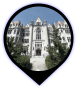
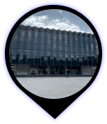
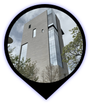
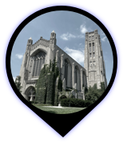
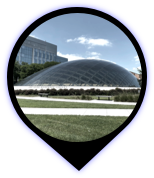
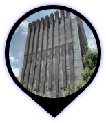
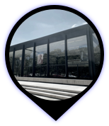

<!DOCTYPE html>
<html>

<head>
    <meta charset="utf-8" />
    <title>You Be My Ally</title>
    <meta name="viewport" content="initial-scale=1,maximum-scale=1,user-scalable=no" />
    <script src="https://api.mapbox.com/mapbox-gl-js/v1.12.0/mapbox-gl.js"></script>
    <link href="https://api.mapbox.com/mapbox-gl-js/v1.12.0/mapbox-gl.css" rel="stylesheet" />
    <link href="https://stackpath.bootstrapcdn.com/font-awesome/4.7.0/css/font-awesome.min.css" rel="stylesheet" />
    <link href="css/style.css" rel="stylesheet" />
    <style>
        body {
            margin: 0;
            padding: 0;
        }

        #map {
            position: absolute;
            top: 0;
            bottom: 0;
            width: 100%;
        }
    </style>
</head>

<body>
    <style>
        #menu {
            position: absolute;
            background: #fff;
            padding: 10px;
            font-family: 'Open Sans', sans-serif;
        }
    </style>

    <div id="map"></div>
    <script>
        mapboxgl.accessToken = 'pk.eyJ1IjoicGF1bGluZXJvcXVlcyIsImEiOiJjazl2Y2N5a28wYWFkM21wZ2E0Z252OWlkIn0.cxAWG9701bsO4gwLsFXCpg';
        var map = new mapboxgl.Map({
            container: 'map',
            style: 'mapbox://styles/paulineroques/ckeml88y32ed319mtoj92z7ht',
            center: [-87.60093, 41.78896],
            zoom: 17,
            pitch: 0,
            bearing: 0,
            container: 'map',
            antialias: true
        });

        // The 'building' layer in the mapbox-streets vector source contains building-height
        // data from OpenStreetMap.
        var geolocate = new mapboxgl.GeolocateControl({
            positionOptions: {
                enableHighAccuracy: true
            },
            trackUserLocation: true
        });
        // Add the control to the map.
        map.addControl(geolocate);

        map.on('load', function () {


            // Insert the layer beneath any symbol layer.
            var layers = map.getStyle().layers;

            var labelLayerId;
            for (var i = 0; i < layers.length; i++) {
                if (layers[i].type === 'symbol' && layers[i].layout['text-field']) {
                    labelLayerId = layers[i].id;
                    break;
                }
            }
            // geolocate.trigger();

            // map.addControl(
            //     new mapboxgl.GeolocateControl({
            //         positionOptions: {
            //             enableHighAccuracy: true
            //         },
            //         trackUserLocation: true
            //     })
            // );
            map.loadImage(
                'img/location.png',
                function (error, image) {
                    if (error) throw error;
                    map.addImage('custom-marker', image);
                    // Add a GeoJSON source with 2 points
                    map.addSource('points', {
                        'type': 'geojson',
                        'data': {
                            'type': 'FeatureCollection',
                            'features': [
                                {
                                    'type': 'Feature',
                                    'geometry': {
                                        'type': 'Point',
                                        'coordinates': [
                                            -87.60093,
                                            41.78896
                                        ]
                                    },
                                    'properties': {
                                        'description' : '',
                                        "icon": {
                                        "iconUrl": "img/thumbnailCobb.png",
                                        "iconSize": [50, 50], // size of the icon
                                        "iconAnchor": [25, 25], // point of the icon which will correspond to marker's location
                                        "popupAnchor": [0, -25], // point from which the popup should open relative to the iconAnchor
                                        "className": "dot"
                                     }
                                        // 'title': 'Cobb Lecture Hall'
                                    }
                                },
                                {
                                    'type': 'Feature',
                                    'geometry': {
                                        'type': 'Point',
                                        'coordinates': [-87.599, 41.78506]
                                    },
                                    'properties': {
                                        'description' : '',
                                        // 'title': 'Laird Bell Law Quadrangle'
                                    }
                                },
                                {
                                    'type': 'Feature',
                                    'geometry': {
                                        'type': 'Point',
                                        'coordinates': [
                                            -87.60356,
                                            41.78536
                                        ]
                                    },
                                    'properties': {
                                        'description' : '',
                                        // 'title': 'Reva and David Logan Center for the Arts'
                                    }
                                },
                                {
                                    'type': 'Feature',
                                    'geometry': {
                                        'type': 'Point',
                                        'coordinates': [
                                            -87.59707,
                                            41.78856
                                        ]
                                    },
                                    'properties': {
                                        'description' : '',
                                        // 'title': 'Rockefeller Memorial Chapel'
                                    }
                                },
                                {
                                    'type': 'Feature',
                                    
                                    'geometry': {
                                        'type': 'Point',
                                        'coordinates': [
                                            -87.60086,
                                            41.79196
                                        ]
                                    },
                                    'properties': {
                                        'description' : '',
                                        // 'title': 'The Joe and Rika Mansueto Library'
                                    }
                                },
                                {
                                    'type': 'Feature',
                                    'geometry': {
                                        'type': 'Point',
                                        'coordinates': [
                                            -87.60276,
                                            41.78986
                                        ]
                                    },
                                    'properties': {
                                        'description' : '',
                                        // 'title': 'Cummings Life Science Center'
                                    }
                                },
                                {
                                    'type': 'Feature',
                                    'geometry': {
                                        'type': 'Point',
                                        'coordinates': [
                                            -87.60173,
                                            41.78557
                                        ]
                                    },
                                    'properties': {
                                        'description' : '',
                                        // 'title': 'School of Social Service Administration'
                                    }
                                }

                            ]
                        }
                    });

                    // Add a symbol layer
                    map.addLayer({
                        'id': 'points',
                        'type': 'symbol',
                        'source': 'points',
                        'layout': {
                            'icon-image': 'custom-marker',
                            // get the title name from the source's "title" property
                            'text-field': ['get', 'title'],
                            'text-font': [
                                'Open Sans Semibold',
                                'Arial Unicode MS Bold'
                            ],
                            'text-offset': [0, 1.25],
                            'text-anchor': 'top'
                        }
                    });
                }
            );

 
            map.on('click', 'points', function (e) {
                var coordinates = e.features[0].geometry.coordinates.slice();
                var description = e.features[0].properties.description;

                // Ensure that if the map is zoomed out such that multiple
                // copies of the feature are visible, the popup appears
                // over the copy being pointed to.
                while (Math.abs(e.lngLat.lng - coordinates[0]) > 180) {
                    coordinates[0] += e.lngLat.lng > coordinates[0] ? 360 : -360;
                }

                new mapboxgl.Popup({ className: 'popups' })
                    .setLngLat(coordinates)
                    .setHTML(description)
                    .addTo(map);
            });

            // Change the cursor to a pointer when the mouse is over the places layer.
            map.on('mouseenter', 'points', function () {
                map.getCanvas().style.cursor = 'pointer';
            });

            // Change it back to a pointer when it leaves.
            map.on('mouseleave', 'points', function () {
                map.getCanvas().style.cursor = '';
            });
        });


    </script>
    <div class="topleft"></i></div>
    <div class="bottomleft"></i></div>
</body>

</html>